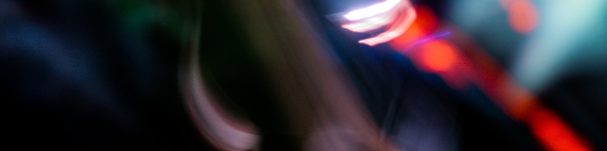
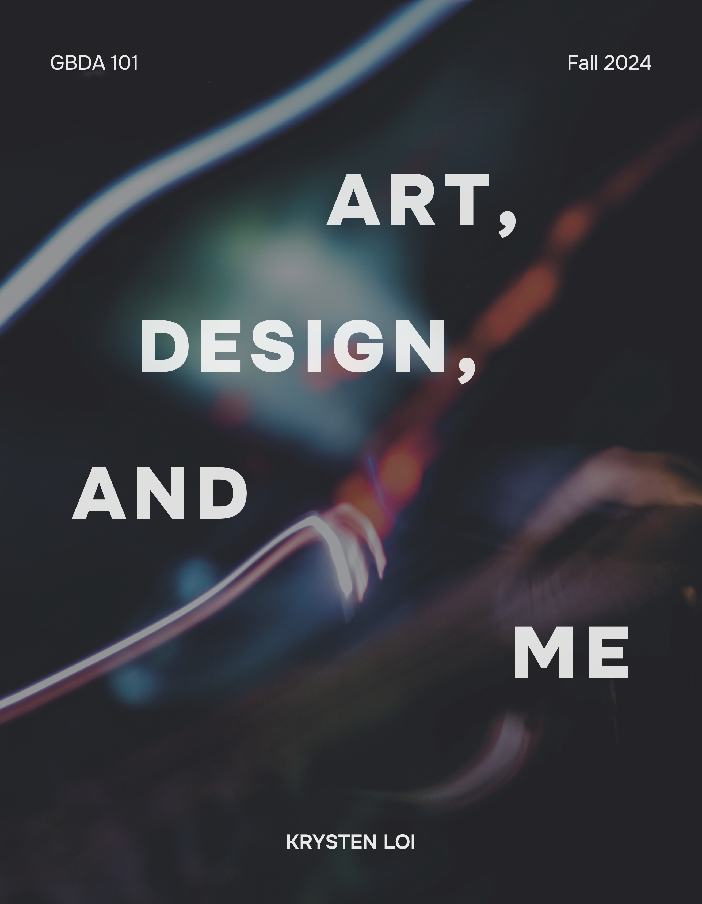
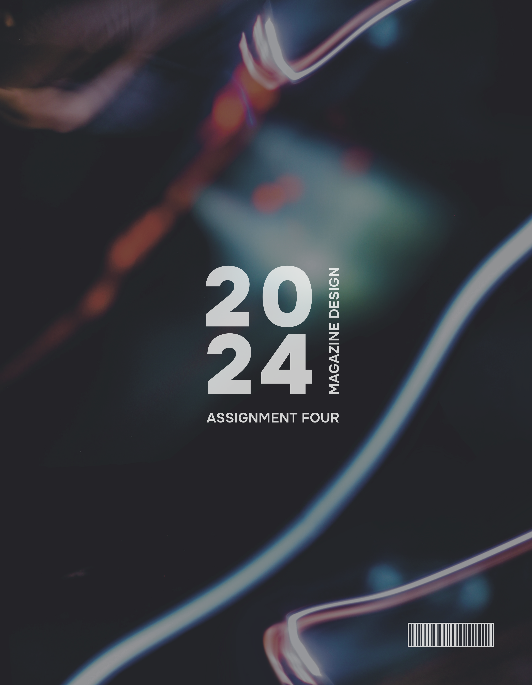

A mini documentary capturing the drive of the Waterloo Women's Basketball team.

I'm Krysten — a Global Business & Digital Arts student
exploring digital design, branding & creative media.
I bring ideas to life through video production, audio storytelling, graphic design, and bold branding that's built to inspire and leave a lasting impact.


A print-style showcase of my first-year work that captures the projects, ideas, and design choices that shaped my early journey in GBDA.
Video Editing • Graphic Design • Branding
Digital Marketing • Javascript • HTML • CSS
Figma • Illustrator • Photoshop • InDesign • After Effects
Premiere Pro • Audition • Da Vinci Resolve • Logic Pro